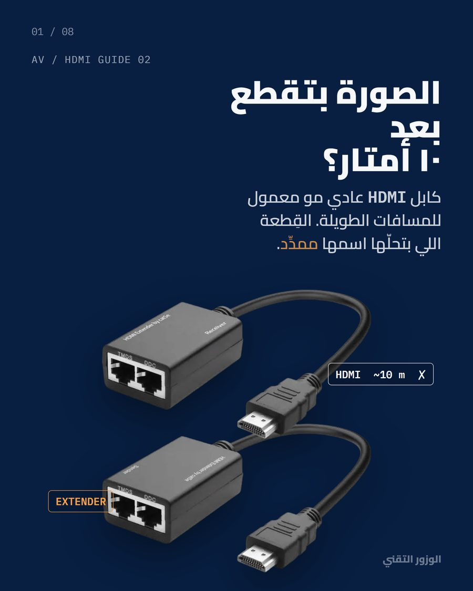
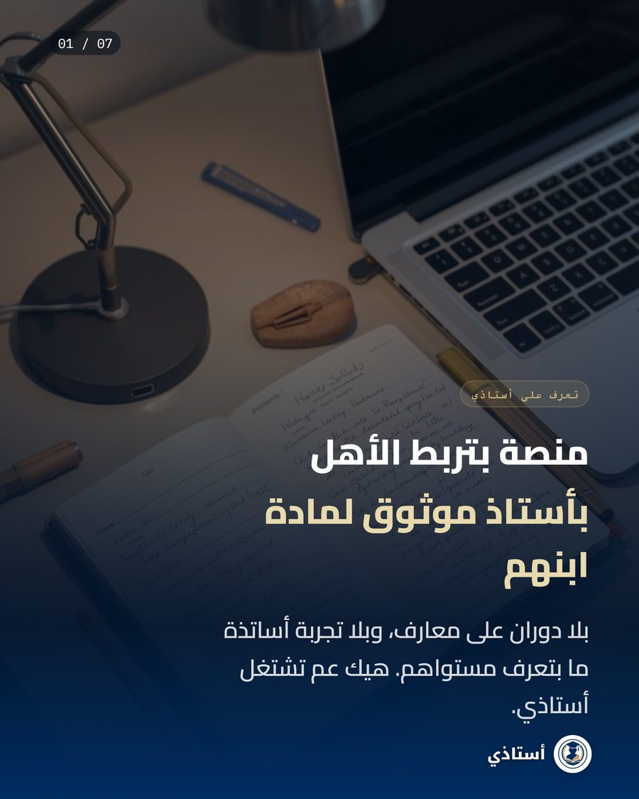
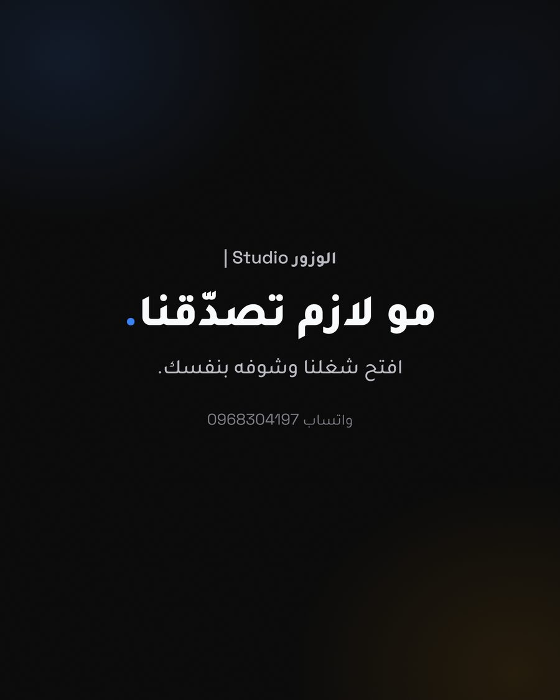

منصة ذات وجهين / أنا المؤسس الوحيد
أستاذي
منصة دروس خصوصية لطلاب في سوريا. المعلمون موثّقون، الطلاب يحجزون الحصص عبر آلة حالة كاملة للحجز، وسجل عمولات مرقّم يبقي الجانب المالي قابلاً للتدقيق. حسابات للمعاهد والمدارس، ولوحة تحكم إدارية. مبنية من الألف إلى الياء، وتعمل فعليًا.
Next.jsNestJSPostgresPrismaVercel
زيارة ostazi-edu.com
المحتوى، الكاروسيل والحركة
نفس الانضباط، مطبَّق على المحتوى لا الكود فقط.
كاروسيلات حقيقية لعملاء، مُقيَّمة يدويًا وفق معيار حرفي ثابت قبل أي نشر. المعيار نفسه الذي تتحقق منه بوابة الجودة الإنتاجية.

الوزور · دليل موسّع HDMI 9.39.48.79.09.1
أستاذي · كاروسيل التعريف 8.59.07.88.28.4
استوديو الوزور · تشويق الوكالة 8.69.16.97.88.1المعيار: الترتيب البصري (هل تعرف ما تقرأه أولًا)، الوضوح، استخدام لون مقصود، صقل احترافي. مُراجَع شريحة بشريحة، لا مديح تلقائي مولّد. أفضّل أن أُظهر 6.9 حقيقية على أن أزوّر عشرة.
ما يثبته هذا
كاروسيلات الوزور التقني والوزور استوديو وأستاذي تمر بنفس خط الإنتاج الذي مرّ به الكود أعلاه: بحث مرجعي حقيقي، عنوان جذب مكتوب، خريطة إيقاع، ثم تصميم يُراجَع وفق معيار قبل النشر، لا نظرة واحدة ثم نشر.
شاهد الحسابات الحقيقية
هذه ليست نماذج في مجلد. حساب الوزور التقني على إنستغرام يعمل بنفس نظام المحتوى هذا.
افتح @alwazzour_tech على إنستغرام ↗